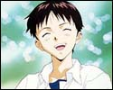
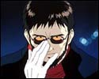
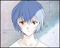
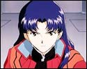
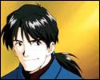
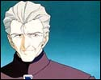
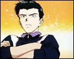

|  | Shinji is for the most part of the time an extremely troubled individual, however, most of his ordeals are worsened, and often even caused, by his severe lack of self confidence. Shinji finds it incredibly hard to express his feelings towards others for the fear of being emotionally hurt, and is all too often unwilling to adapt to new situations. The fact that Shinji hasn't had the best of relationships with his scheming father, Gendo Ikari, having chosen to run away many years ago, and coupled with the loss of his mother, Yui Ikari, at an early age hasn't made his life any easier to deal with. Yet unfortunately running away from bad situations is one of Shinji's personal traits, one that he must over come in order to lead a less stressful life. Unable, or simply unwilling, to bear the company of his father after living alone in exile for so many years, Shinji chooses instead to accept Misato's invitation to live with her on his arrival to Tokyo-3, something which is a big step for Shinji. Although Misato turns out to be not quite the ideal roommate Shinji had in mind, the bizarre situation he finds himself thrown into does help him to open up a little. Shinji is also the reluctant pilot of EVA-01, though no one really knows why he continues to pilot the Eva as he's made it quite clear on several occasions now that he would rather not be its pilot. |
|  | As a Commander, Gendo is very experienced, secretive, always achieves results and is able to stay calm when in command, even when faced with dire situations. As a father, however, he is cold, heartless and even cruel. Gendo has never been there for his son, Shinji, and has made no real attempts to get to know him better, despite the fact that he's capable of doing so for Rei. He seems to almost be disappointed with Shinji and is content to treat his son as a complete stranger whom he may occasionally have a use for. It's no wonder why Shinji chose to run away at such an early age after his mother, Yui Ikari, died. Gendo met Yui during his University years, but it's always been assumed by many that his main reason for marrying her was so that he could get closer to her work and to the organisation she worked for, and that he had no real interest in raising a family. All Gendo really cares about is carrying out the last wish of his wife; the prevention of a probable third impact instigated by Angels. |
|  | Rei is extremely timid, shy and at times almost seems withdrawn from the world around her. She finds it incredibly hard to express her feelings towards others and as a consequence isn't the kind of person who makes friends that easily. All of Rei's personnel records have been erased, she has no parents and there is no trail leading to her past, it would seem that her existence begins at a dead end. She was the first child to be chosen to pilot an Eva, in particular EVA-00, in accordance with the Marduk institute. Though unfortunately she was seriously injured during her first attempt to synchronise with her Eva when it mysteriously went out of control. Fortunately Commander Ikari rescued her and she survived the accident, her next attempt at synchronisation was successful and she has now become the active pilot of EVA-00. Whether or not this is by choice is unknown, Rei simply seems to do as she is told without complaining, something which Shinji is known for doing. |
|  | Misato is an energetic, determined and strong willed individual who's not afraid to take charge of a bad situation, that is when she's not busy drinking. Misato joined NERV after the death of her father, who died saving her life during the second impact whilst leading the Katsuragi expedition in Antarctica, intent on exacting revenge against the Angels for her loss. She soon acquired the rank of Captain and shortly afterwards that of Major, and is appointed as NERV's operations director with explicit control over Evas 00, 01 and 02 in the absence of both Commanders Ikari and Fuyutsuki. As well as working for NERV, she is Shinji's voluntary guardian, although her attitude and behaviour towards him is more of that expected from an older sister. Despite her sisterly approach to Shinji and her occasionally bad domestic habits though, Misato does manage to go a long way into helping Shinji to over come his problems, and in getting him to open up a little. Misato has also taken on the role of Asuka's guardian. |
|  | Kaji is quite the playful type who officially works for NERV special inspections, however, he also secretly works for the Japanese government investigating NERV's true intentions on their behalf. Kaji has a nose for trouble and enjoys nothing more than living out the life of some kind of secret agent or spy, but his desire to act out this kind of role will undoubtedly eventually land him in the worst of situations. |
| Asuka is extremely confident and constantly struggles onwards trying to better herself over others. Since her mother, Kyoko Zeppelin Souryu who worked for NERV, went insane after an accident, in which she tried to synchronise with EVA-02, and later committed suicide many years ago, Asuka has immersed herself heavily in her own pride; possibly her way of dealing with her tragic loss. As a result of this she is often unwilling to accept any kind of help and advice from others, and will rarely ever admit to making a mistake. She can also be very annoying at times and is known to look down on people, especially Shinji, however, she would never intentionally hurt the feelings of others. Asuka is also the proud pilot of EVA-02, and is probably the only Eva pilot who actually enjoys and takes pride in being a pilot. Although she puts a lot of effort into piloting EVA-02, unlike Shinji she is not a naturally talented pilot, it is therefore extremely likely that this is the reason for her pointless ongoing rivalry with him. |
|  | When in command, Kouzou is not all that dissimilar to Commander Ikari in that he too remains perfectly calm even when a situation turns nasty. He can, however, be a little apprehensive at times, but will take the time out to engage in idle conversation with lower ranking NERV personnel. Unlike Gendo, Kouzou is more likely to play it safe as a posed to taking big risks, and although Kouzou maybe a decade older than Gendo, it would seem that his role in NERV's hierarchy is more of that of a vice-commander. It's Commander Ikari who seems to have the last say, that is when he's not away attending other more important matters. |
|  | Toji is the pilot of EVA-03, however, his decision to become an Eva pilot was hardly by choice. He only accepted the responsibility of piloting the Eva on the basis that his sister be transferred to one of NERV's specialist hospitals where she'd receive the best medical care and treatment. As a result of having to hold up his end of the deal, and having heard of some of the grief that the other Eva pilots have gone through, Toji, as most would imagine, isn't exactly enthusiastic about the whole affair. |